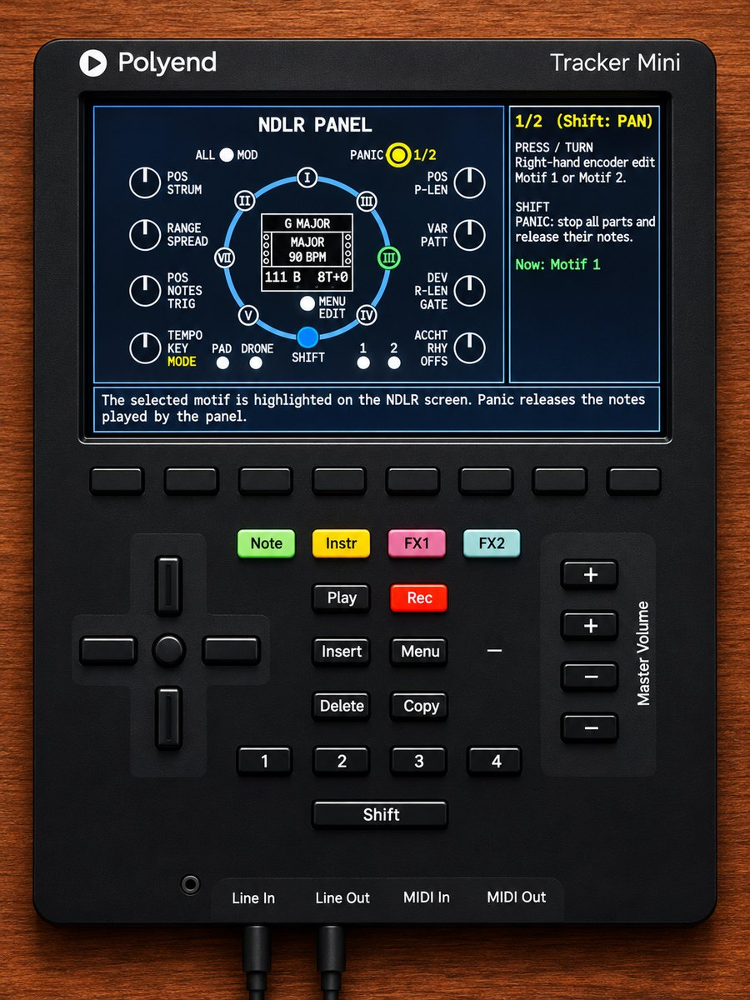
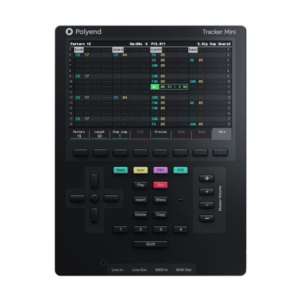

Your whole NDLR on screen
All eight encoders, the seven chord buttons, ALL, 1/2, Menu, Shift and the four part buttons sit where they do on the hardware, drawn across the Mini's 800 by 480 display.
Chord machine meets tracker
Eight encoders, a ring of seven chord buttons and four parts, drawn on the Mini's screen and played with its dpad. Chords, a drone and two motifs drive the internal synths, with the NDLR's menus and editors behind them.

Alpaca running on a Polyend Tracker Mini.
This is the screen Alpaca draws on the Mini, and it behaves as the firmware does. Roll the mouse over any control to see what it does, click to press it, and drag a dial up or down to turn it. Press PLAY to start all four parts, press the chord buttons I to VII to change the harmony, and click a dial to step through its settings. Switch Sound on to hear it.
The panel is drawn for an 800 by 480 screen, so it reads best on a tablet or computer.
Keyboard, once the panel has focus: ←↑↓→ dpad, Enter Middle, -= turn by 1, [] turn by 10, P Play, hold Shift for Shift. On a touch screen, tap once to highlight and again to press. Holding Shift while you turn changes the master volume, as on the Mini.
Things to try: turn the bottom-left dial to QNT and choose Next Bar, then press a chord button and watch it wait, lit blue, for the bar line. Start the Tracker pattern and the panel follows its tempo, with TRK on the screen. Give the Drone the Pluck sound to hear why it needs a sound that sustains. REC lights up as it does on the Mini, but the demo does not save a file.
The sound here is a simple browser synth, and the drum loop stands in for a Tracker pattern. On the Tracker, Alpaca plays the built-in synths (ACD, FAT, VAP, WTFM, PERC, DIRT and CHIP), so it sounds much better.
An NDLR is a box you play with chords and encoders. Alpaca keeps that layout and puts all of it on hardware you may already own.
All eight encoders, the seven chord buttons, ALL, 1/2, Menu, Shift and the four part buttons sit where they do on the hardware, drawn across the Mini's 800 by 480 display.
Move a highlight from control to control with the dpad. Middle presses what is highlighted, and the plus and minus buttons turn the highlighted dial. Each dial's white line follows the value it is set to.
Chord buttons I to VII, with Shift chord types: triad, 7th, sus2, alt2, alt1, sus4 and 6th. Eleven modes, keys stepped around the circle of fifths, and tempo from 10 to 300 BPM.
The Pad has octave, strum, a range of up to eight notes and four spread voicings. The Drone has octave, added fifth and octave notes, and a trigger that follows the chord or holds the key root, held or repeated every quarter, half or whole note.
Each motif has its own octave and pattern length, six variations, eight patterns, eight rhythms, six clock divisions, a rhythm length of 4 to 32 steps, gate and accent. Offset delays Motif 2 by up to three sixteenth notes. The 1/2 button picks which motif you edit.
Set Quantise to Next Beat or Next Bar and chord changes and part starts wait for the grid. A queued button turns blue until it lands, and motifs already playing keep their place.
Alpaca does not take over the Tracker. Start it while an ordinary pattern is already running and play over the top. The panel follows the Tracker's tempo, with TRK on its screen, and your chords, drone and motifs come in on the next beat or bar.
Switch Clock to Internal and the jam runs at its own tempo while the Tracker pattern keeps playing. Switch back and the parts rejoin the pattern on the next beat or bar.
Alpaca has no sounds of its own. It plays the synths already built into your Tracker (ACD, FAT, VAP, WTFM, PERC, DIRT and CHIP), so the pad, drone and motifs sound as good as the Mini itself does.
The Pad plays Synth 1, the Drone Synth 2, Motif 1 Synth 3 and Motif 2 Synth 4, and you can load any of the Tracker's synths and any patch on each of them. The four share the Mini's eight voices, so all four are available as long as there is enough polyphony to go round. The Pad and Drone borrow spare voices while they play.
The Drone holds its notes for as long as it plays, so give Synth 2 a patch that sustains. A sound that decays on its own will fade away while the Drone is still running, and it will seem to have stopped.
Open Instrument Parameters from the Menu while the jam is running and swap or edit the patch on any of the four synths. The chords, drone and motifs keep playing while you audition new sounds.
Press REC in the bottom right of the screen and it captures all the sound playing, Alpaca and your Tracker pattern together, as a stereo WAV in the Recordings folder. Each take is saved with a prefix and an incrementing number, such as NDLR0003, so nothing gets overwritten.
Open the Sample Recorder while Alpaca is playing and Master Mix is selected for you, so you can capture the jam as a sample without stopping the music.
Sample playback now has a loop setting, so you no longer have to hold the key or keep pressing Preview to hear a sample.
A side column explains whatever is highlighted: what it does alone, with Shift, and in Menu or Editor mode, with a live readout of its value. Menu and Editor modes show the NDLR's labels for the Mod Matrix, LFO, Settings and editor pages; those pages are not in this build.
Alpaca follows the NDLR's front plate: the same encoders either side, the same ring of chord buttons around a small screen, the same four part buttons along the bottom. The Mini supplies the screen, the dpad and the synths.

A chord and arpeggio machine from Conductive Labs: eight push encoders, seven chord buttons and a small display.

Polyend's compact tracker: a colour screen, a dpad, soft keys and internal synths.

The NDLR's controls on the Mini's screen. The green button is the current chord and the yellow ring follows the dpad.
The first two images show the original hardware and belong to Conductive Labs and Polyend. The third shows Alpaca running on the Mini.
Two small companies, each with an unusual instrument and a habit of listening to its users.
Conductive Labs, Beaverton, Oregon
Pronounced "noodler". Conductive Labs is run by two co-founders who describe it as a passion project: they build what they want to use in their own studios. The NDLR packs a four-part polyphonic arpeggiator and chord player into one box, made to give otherwise silent synthesizers something to play.
It reached the world on Kickstarter in September 2017 with a $40,000 goal. Backers could get one for $199, with delivery promised for late March 2018. Early demos paired prototypes with a Blofeld, Volcas and a Deepmind 12.
The first version came in a blue and grey anodized aluminium case. Backers later asked for more, so the company redesigned the hardware and moved the software to a PJRC Teensy 4. The Rev2 has a red powder-coated base and a power button, and original owners could buy an upgrade board. In 2025 the company turned to a new synth, the Terrain Synth, with its own Kickstarter.
Polyend, Olsztyn, Poland
Trackers began as software on home computers: the Amiga, Atari ST, MS-DOS machines and the C64. Music is typed into a grid of notes and samples, row by row, instead of being drawn on a timeline. Polyend, founded in 2015 in north-eastern Poland by Piotr Raczyński, took that idea back into a box with buttons.
The company first made drum robots and sequencers before releasing the Tracker hardware in 2020. The compact Tracker Mini was announced for pre-order in 2023 at $699, with first deliveries expected in July of that year. A limited all-metal edition followed for the company's tenth anniversary in 2025.
On November 2, 2026 Polyend published the firmware source for the Tracker, Tracker+ and Tracker Mini on GitHub as Tracker Community Edition 1.0. It added a recovery system against bad builds, the CHIP and DIRT synths on the Tracker+ and Mini, and a synth SDK. Alpaca is built on that release.
Open Config, then Info, then NDLR Panel. Everything is driven by the Mini's own buttons.
| Dpad | Move the highlight |
|---|---|
| Middle | Press the highlighted control |
| +1 / -1 | Turn the highlighted encoder one step |
| +10 / -10 | Turn it ten steps |
| Middle on a dial | Step through that dial's settings |
| Play | ALL: start or stop every part |
| Shift + 1/2 | Panic: stop all four parts and release their notes |
| Shift with +/- | Master volume |
| Shift | Hold for NDLR Shift, or highlight SHIFT and press Middle to latch it |
| Menu (hold) | Mini module popup, to leave the panel |
Most people only need the first path: download one file and copy it to the SD card. No coding or compiler needed.
.ptf file from the Releases page (the button above).Firmware. Create the folder if it isn't there.For people who want to change the code. You need the Tracker CE source and the ARM toolchain it asks for.
tracker-ce source from Polyend's GitHub.firmware folder from the Alpaca repo over the root of that checkout.make mini TOOLCHAIN=arm-none-eabi- BUILD_TAG=alpaca.ptf to /Firmware on the SD card and run Firmware update, as in "Just install it".If Firmware update doesn't list the file, check that it sits directly inside Firmware on the card and still ends in .ptf. Alpaca is a complete firmware, so installing it replaces what is on the Mini now. Tracker CE's recovery system and Polyend's own firmware are the way back if you want to switch.
Alpaca is free. If it makes your music better, you can leave a tip on Ko-fi.
Fan-made and unofficial, and flashing firmware is at your own risk. It uses the same licence as Tracker CE, PolyForm Noncommercial, so it is free to use but not to sell.